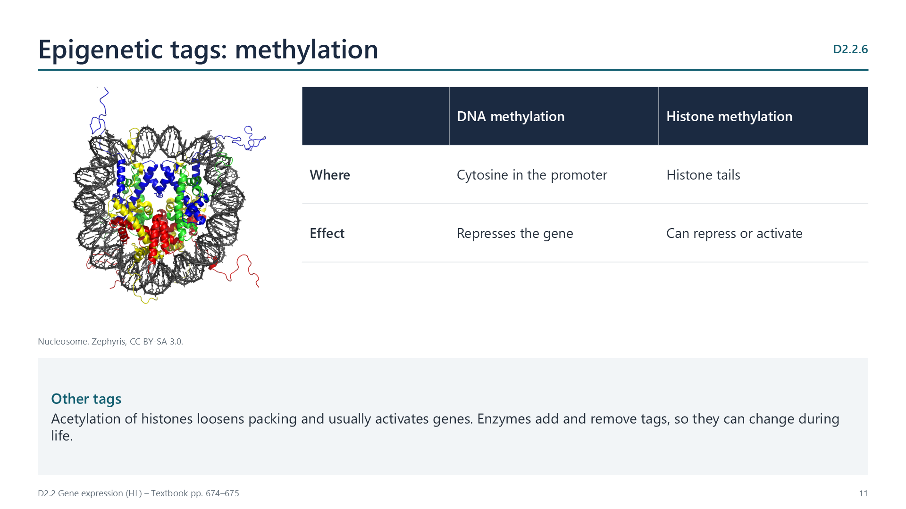
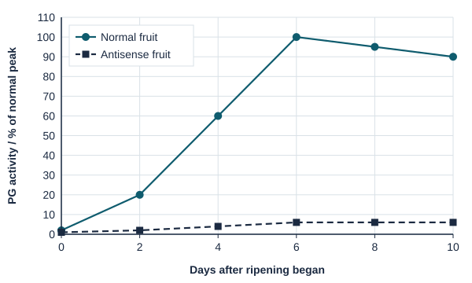
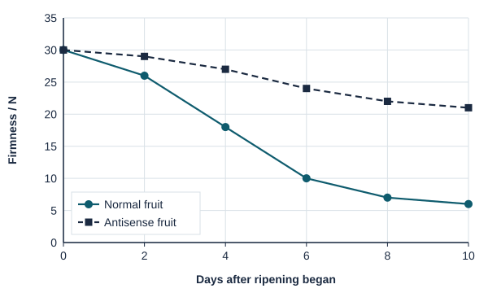
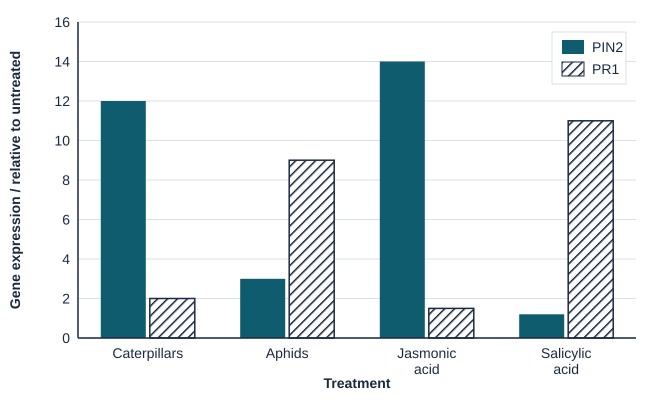

Written for this site from the class slides, with textbook page references for each statement. The chapter is on pages 670–680 of the course textbook. Image credits are on slide 29.
Gene expression is how the information in a gene affects the phenotype: the gene is transcribed into mRNA, the mRNA is translated into a polypeptide, and the protein acts, for example as an enzyme. For example, the enzyme tyrosinase is needed to make the pigment melanin.
D2.2.2
Transcription factors
pp. 671–672
Transcription factors are proteins that bind specific base sequences. General factors and RNA polymerase bind the promoter, just before the gene. Activators bind enhancers, which may be thousands of bases away; the DNA loops so they meet the promoter proteins and raise the rate of transcription. Repressors bind silencers and lower it.
D2.2.3
mRNA breakdown
p. 672
Each mRNA has a poly-A tail that is shortened over time; when it is short enough, nucleases break the mRNA down. In human cells mRNA lasts from minutes to days. Controlling how long it lasts controls how much protein is made from it.
Epigenetics
D2.2.4
Epigenesis
pp. 672–673
Epigenesis is the development of patterns of differentiation in a multicellular organism. Cells switch different genes on and off, so the phenotype of each cell changes while the base sequence, the genotype, stays the same.
D2.2.5
Genome, transcriptome, proteome
pp. 673–674
The genome is all the genetic information, the same in every cell. The transcriptome is the mRNA a cell makes at a given time, and the proteome is the proteins it makes; both differ between cells and change over time. No cell expresses all its genes, and the pattern decides how it differentiates.
D2.2.6
Methylation as an epigenetic tag
pp. 674–675

Methyl groups added to cytosine in a promoter repress transcription of the gene. Methyl groups on amino acids in histone tails can repress or activate transcription by changing how tightly DNA is packed and which proteins bind.
D2.2.7
Epigenetic inheritance
pp. 675–676
Methylation patterns are copied when DNA replicates, so daughter cells keep the same pattern of expression. If tags survive meiosis, changes in phenotype can pass to offspring without any change to the base sequence.
D2.2.8
Environmental effects
pp. 676–677
Air pollution (particulate matter, ozone, nitrogen oxides) is linked to changes in DNA methylation, for example in genes for immune responses, and to asthma. In agouti mice, a mother’s diet changes methylation and the coat colour and weight of her offspring. Much human evidence is correlational.
D2.2.9
Resetting tags in gametes
pp. 677–679
Most tags are removed in eggs and sperm and in the early embryo, so the zygote can form every cell type. Some survive: in imprinted genes one parent’s copy is silenced. Ligers (lion father, tiger mother) grow very large, probably because growth-promoting imprints from the lion are not balanced by growth-limiting imprints from the tiger; tigons do not.
D2.2.10
Twin studies
pp. 679–680
Monozygotic twins have identical genomes, so differences between them come from the environment. Their methylation patterns are similar when young and differ more with age, especially if they live apart.
D2.2.11
External signals
p. 680
In E. coli, lactose binds a repressor so that it leaves the DNA, and the genes for lactose uptake and breakdown are transcribed only when lactose is present. A steroid hormone such as oestradiol enters target cells, binds a receptor, and the complex acts as a transcription factor.
Videos
Select a video to play it here. Select it again to close it.
Print this guide and complete it as you work through the slides and videos. It asks for your own explanations, so close the notes while you try each section.
A printable worksheet covering all eleven statements, from quick recall to data questions and a longer answer. It has 40 marks and takes about 40 minutes, or you can do one section at a time.
Questions built on realistic experimental data, in the style of Paper 1B and Paper 2. Work them on paper and show your working. 19 marks in total. Your teacher has the mark scheme.
Antisense RNA and fruit softening
7 marks
The enzyme polygalacturonase (PG) breaks down pectin in cell walls as tomatoes ripen, making them soft. Tomato plants were genetically modified to produce antisense RNA, which is complementary to the mRNA for PG. PG activity and fruit firmness were measured as fruit ripened.

State the PG activity of antisense fruit at day 6, as a percentage of normal fruit at day 6. [1]
Explain how antisense RNA reduces the production of PG. [2]

Compare the firmness of normal and antisense fruit. [2]
Suggest why the antisense fruit still softens a little. [1]
Suggest one advantage of these tomatoes for growers or shops. [1]
A brain chemical and alcohol
6 marks
Neuropeptide Y (NPY) is made by neurons in the brain. Three groups of mice were compared: knockout mice with the NPY gene removed, normal mice, and mice genetically modified to make extra NPY. Each mouse could choose between water and an alcohol solution. Sensitivity to alcohol was measured as how long mice slept after a fixed dose.
Mice
NPY in brain / % of normal
Alcohol drunk / g kg−1 day−1
Sleep time after a dose / min
Knockout
0
12.5
18
Normal
100
7.1
31
Extra NPY
250
3.9
47
Identify the relationship between NPY level and alcohol drunk. [1]
Calculate the percentage difference in alcohol drunk by knockout mice compared with normal mice. [1]
Outline the relationship between sensitivity to alcohol and the amount drunk. [2]
Evaluate the hypothesis that low levels of NPY cause a preference for alcohol. [2]
Plant defence genes
6 marks
Tomato leaves were attacked by caterpillars (which chew leaves) or aphids (which suck sap), or sprayed with one of two plant signalling chemicals, jasmonic acid or salicylic acid. After 24 hours, mRNA was extracted, converted to DNA by reverse transcription and copied by PCR to measure the expression of two defence genes. Expression is shown relative to untreated leaves (1.0).

Identify the treatment that increases PIN2 expression most. [1]
Compare the effects of caterpillars and aphids on the two genes. [2]
Deduce which signalling chemical each herbivore causes the plant to produce. Give reasons. [2]
Explain why the mRNA had to be converted to DNA before PCR. [1]
Practical
Light and gene expression in seedlings
Lab20 min, then 7 daysD2.2.8
You will need: Fast-growing seeds such as cress or bean, compost, a dark box, ruler
Sow identical batches and keep one in the light and one in the dark
Water them equally for a week
Compare height, leaf size and colour
Explain how the same genes can give different phenotypes
Safety: Wash hands after using compost. Check seeds have not been treated with chemicals.
Carry this out with your teacher's supervision and follow your school's lab rules.
Nature of science and TOK
Nature of science
Evidence
Studies of people conceived during the Dutch Hunger Winter of 1944-45 linked famine to health effects decades later, with evidence of lasting epigenetic marks.
Theory of knowledge
What can natural experiments tell us?
Researchers cannot ethically create a famine. Consider the strengths and limits of evidence from events that were never designed as experiments.
Think deeper
Predict first, then check. Each one opens on the Think deeper pages.